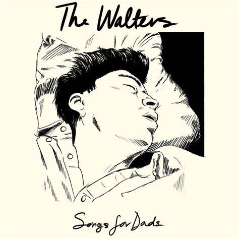

I just need someone in my life to give it structure To handle all the selfish ways I'd spend my time without her You're everything I want, but I can't deal with all your lovers You're saying I'm the one, but it's your actions that speak louder Giving me love when you are down and need another I've gotta get away and let you go, I've gotta get over
I just need someone in my life to give it structure To handle all the selfish ways I'd spend my time without her You're everything I want, but I can't deal with all your lovers You're saying I'm the one, but it's your actions that speak louder Giving me love when you are down and need another I've gotta get away and let you go, I've gotta get over
But I love you so (ooh-ooh) I love you so (ooh-ooh) I love you so (ooh-ooh) I love you so (ooh-ooh)
I'm gonna pack my things and leave you behind This feeling's old and I know that I've made up my mind I hope you feel what I felt when you shattered my soul 'Cause you were cruel and I'm a fool So, please let me go
But I love you so (please let me go) I love you so (please let me go) I love you so (please let me go) I love you so
I love you so